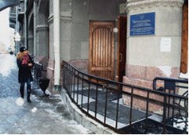

Многофункциональный центр предоставления государственных услуг Адмиралтейского района

Расположение на карте:
Адрес:
Санкт-Петербург, ул. Садовая, д.55-57, литер А
Телефон:
573-99-80 (МФЦ) или 573-90-00 (Городской Центр телефонного обслуживания)
Часы работы:
Ежедневно - с 9.00 до 21.00, без перерыва на обед, выдача талонов электронной очереди прекращается в 20.30.
График личного приема граждан директором СПб ГКУ "МФЦ" и начальником районного МФЦ (по предварительной записи):
Директор СПб ГКУ "МФЦ"
Марков Константин Васильевич
Принимает по адресу:
ул. Красного Текстильщика, д. 10-12, 4 этаж, каб. 485. Вход с Синопской набережной! Среда с 11.00 до 13.00
Начальник МФЦ Адмиралтейского района
Новиков Виктор Васильевич
Принимает по адресу: ул. Садовая, 55-57
Среда с 14.00 до 18.00
Телефон для записи на приём: 222-22-22
Организация принимает участие в предоставлении следующих государственных услуг:
Внимание!
Сведения для перечня представлены государственным учреждением"Многофункциональный центр предоставления государственных услуг", который выполняет функции МФЦ в Санкт-Петербурге.